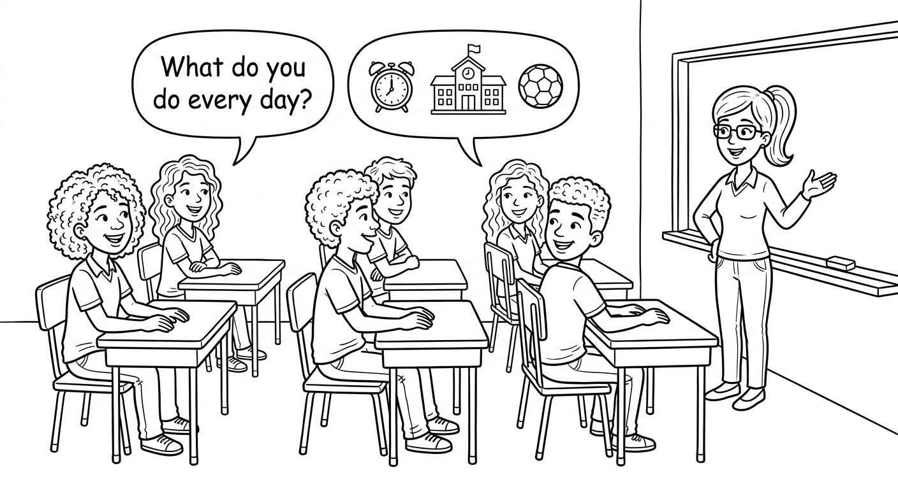
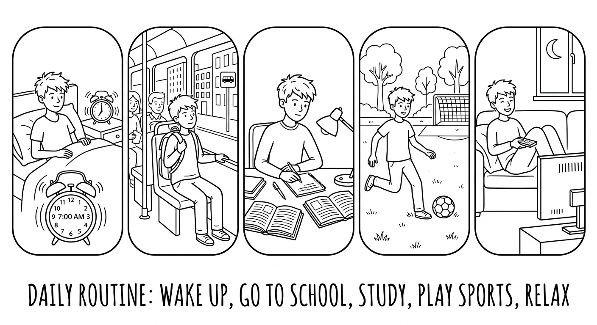
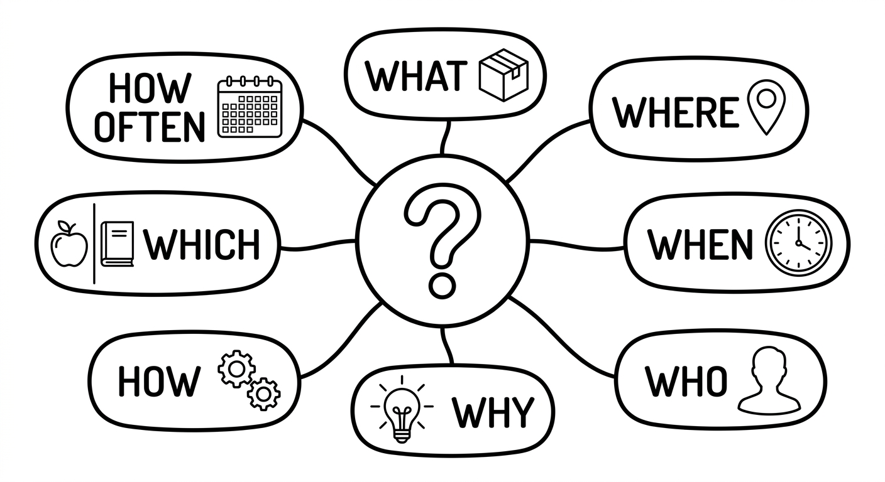
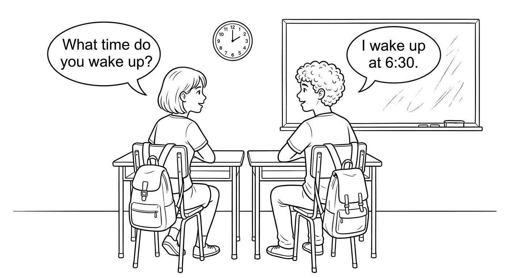
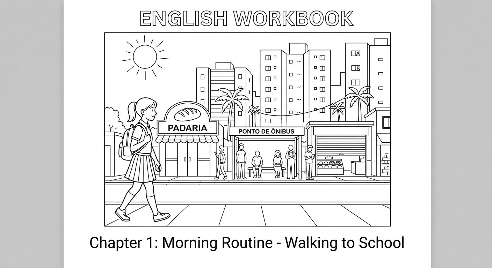

Review: Present Simple & WH Questions
In this chapter, you will review the Present Simple tense and WH Questions. You will practice talking about daily routines, habits, and general facts, and learn how to ask and answer different types of questions in English. This is an important foundation for the B2 level!

Present Simple Review
We use the Present Simple to talk about:
- Habits and routines: things we do regularly
- General truths and facts: things that are always true
- Feelings and opinions: what we like, think, or believe
- Schedules and timetables: fixed events
| Form | Structure | Example |
|---|---|---|
| Affirmative | Subject + verb (+ s/es for he/she/it) | Ana studies English every day. |
| Negative | Subject + do/does + not + base verb | Lucas doesn't like waking up early. |
| Interrogative | Do/Does + subject + base verb + ? | Do you speak English at home? |
Third person -s rules (he / she / it):
- Most verbs: add -s (work → works, read → reads, play → plays)
- Verbs ending in -ch, -sh, -ss, -x, -o: add -es (watch → watches, go → goes, wash → washes)
- Verbs ending in consonant + y: change y to -ies (study → studies, carry → carries)
- Special: have → has
Frequency adverbs tell us how often something happens. They usually go before the main verb but after the verb "to be":
| Adverb | Frequency | Português | Example |
|---|---|---|---|
| always | 100% | sempre | She always arrives on time. |
| usually | 90% | geralmente | I usually take the bus. |
| often | 70% | frequentemente | We often eat rice and beans. |
| sometimes | 50% | às vezes | He sometimes walks to school. |
| rarely / seldom | 10% | raramente | They rarely eat out. |
| never | 0% | nunca | I never drink coffee. |
| Verb | 3rd Person (he/she/it) | Português | Example Sentence |
|---|---|---|---|
| wake up | wakes up | acordar | Camila wakes up at 6:30 every morning. |
| eat | eats | comer | Pedro eats lunch at the school cafeteria. |
| go | goes | ir | She goes to English class twice a week. |
| study | studies | estudar | He studies for his exams every night. |
| work | works | trabalhar | Maria works at a bookstore on weekends. |
| play | plays | jogar / brincar / tocar | Lucas plays the guitar after school. |
| watch | watches | assistir | Ana watches series on streaming platforms. |
| read | reads | ler | He reads the news online every morning. |
| speak | speaks | falar | She speaks three languages fluently. |
| live | lives | morar / viver | They live near the beach in Salvador. |
| have | has | ter | Camila has two older brothers. |
| teach | teaches | ensinar | Professor Silva teaches math and science. |
| take | takes | pegar / levar | Pedro takes the bus to school every day. |
| practice | practices | praticar | She practices English with her friends online. |

Examples in Context
Ana studies English every Tuesday and Thursday.
Ana estuda inglês toda terça e quinta.
Lucas always takes the bus to school. He never drives.
Lucas sempre pega o ônibus para a escola. Ele nunca dirige.
We don't have classes on Saturdays.
Nós não temos aulas aos sábados.
Camila doesn't eat meat. She is vegetarian.
Camila não come carne. Ela é vegetariana.
Do you usually do your homework before dinner?
Você geralmente faz o dever de casa antes do jantar?
Does Pedro play soccer on weekends?
Pedro joga futebol nos finais de semana?
Maria often reads before going to sleep.
Maria frequentemente lê antes de dormir.
Brazilian students often make these mistakes with the Present Simple:
- Forgetting the -s: "She study hard" → "She studies hard"
- Double marking in negatives: "He doesn't goes" → "He doesn't go"
- Wrong auxiliary in questions: "Does you like?" → "Do you like?"
- Adding -s after does: "Does she plays?" → "Does she play?"
- Confusing frequency adverb position: "She goes always" → "She always goes"
Suggested time: 30 minutes
Warm-up activity (5 min): Ask students to tell you three things they do every day. Write their sentences on the board and check for correct third person -s usage.
Pronunciation focus: Review the three pronunciations of the third person -s ending: /s/ (works, likes, stops), /z/ (plays, reads, lives), and /ɪz/ (watches, teaches, washes). Have students categorize the verbs from the vocab table by sound.
L1 interference note: In Portuguese, there is no equivalent of the third person -s rule, so students tend to omit it. Emphasize that in English, this is a grammatical requirement, not optional.
Fill in the blanks with the correct Present Simple form of the verb in parentheses. Pay attention to third person -s rules and negatives.
Select the correct option to complete each sentence.
Maria _______ English with her friends online every weekend.
b) practices_______ your brother take the metro to work?
b) DoesLucas _______ eat meat. He is vegetarian.
c) doesn'tWe _______ go to the beach in the winter. It's too cold.
b) neverCamila _______ three languages: Portuguese, English, and Spanish.
b) speaksWH Questions Review
WH Questions start with a question word and ask for specific information (not just "yes" or "no").
Structure: WH word + do/does + subject + base verb + ?
| WH Word | Português | We use it to ask about... | Example |
|---|---|---|---|
| What | O que / Qual | things, activities, information | What do you study? |
| Where | Onde | places, locations | Where does Ana live? |
| When | Quando | time, dates | When do you have English class? |
| Who | Quem | people | Who teaches your class? |
| Why | Por que | reasons (answer with "because") | Why do you study English? |
| How | Como | manner, way, condition | How do you go to school? |
| Which | Qual (entre opções) | choice between options | Which subject do you prefer? |
| How many | Quantos/Quantas | countable quantities | How many students are in your class? |
| How much | Quanto/Quanta | uncountable quantities, price | How much water do you drink? |
| How often | Com que frequência | frequency | How often do you exercise? |
Important note about "Who": When who is the subject of the sentence, we do NOT use do/does:
- Who teaches your class? (who = subject) — NOT: Who does teach?
- Who do you live with? (you = subject) — do is needed here

WH Questions in Everyday Life
What does Camila usually eat for breakfast?
O que Camila geralmente come no café da manhã?
Where do your parents work?
Onde seus pais trabalham?
When does the English class start?
Quando a aula de inglês começa?
Who do you sit with in class?
Com quem você senta na aula?
Why does Pedro always arrive early?
Por que Pedro sempre chega cedo?
How does Maria get to school every day?
Como Maria chega à escola todo dia?
Which bus do you take to go downtown?
Qual ônibus você pega para ir ao centro?
How often do you visit your grandparents?
Com que frequência você visita seus avós?
Dialogue: Getting to Know a New Classmate

In WH questions with the Present Simple, use do for I/you/we/they and does for he/she/it. After does, the verb stays in the base form (no -s):
- Where does she live? (NOT: Where does she lives?)
- What do you eat for lunch? (NOT: What do you eats?)
The only exception is "who" as a subject: "Who lives here?" (no do/does needed)
Suggested time: 30 minutes
Dialogue activity (10 min): Have students read the dialogue in pairs. Then ask them to underline all the WH questions they find and identify which WH word is used in each one.
Follow-up (5 min): Ask students: "How many different WH words can you find in the dialogue?" (Answer: What, Where, How, When, How often, Why = 6 different WH words)
L1 interference note: In Portuguese, question formation is simpler (often just intonation). Students may forget to add do/does in English WH questions. Practice the structure: WH + do/does + subject + verb.
Match each WH question on the left with the correct answer on the right. Write the letter in the box.
Read each answer. Then complete the WH question that matches it. The WH word is given in parentheses.
Answer: I live in Recife.
? (Where)
Where do you liveAnswer: She wakes up at 6:30.
? (What time)
What time does she wake upAnswer: Pedro plays soccer on Saturdays.
? (When)
When does Pedro play soccerAnswer: Professor Oliveira teaches English.
? (Who)
Who teaches EnglishAnswer: Because I want to get a better job.
? (Why)
Why do you study EnglishAnswer: Camila gets to school by bus.
? (How)
How does Camila get to schoolAnswer: There are 30 students in my class.
? (How many)
How many students are there in your classAnswer: I exercise three times a week.
? (How often)
How often do you exerciseReading: A Day in the Life of a Brazilian Student

Camila is a 17-year-old student who lives in Curitiba, in the south of Brazil. She goes to a public school called Escola Estadual Professor Carlos Drummond. She is in her second year of ensino medio and she studies in the morning shift.
Every day, Camila wakes up at six o'clock. She takes a quick shower and gets dressed. She usually has breakfast with her mother and her younger brother, Gustavo. They eat bread with butter and cheese and drink coffee with milk. Camila's father, Marcos, doesn't eat breakfast at home because he leaves for work very early. He works as a bus driver and starts his shift at five in the morning.
Camila walks to school because it is only fifteen minutes from her house. She likes walking because she listens to music or English podcasts on the way. She always arrives at school before seven o'clock, when classes start. Her favorite subjects are English and Biology. She doesn't like Math very much, but she studies hard because she wants good grades.
At ten o'clock, Camila and her friends have a break. They usually go to the school cafeteria and buy a snack. Her best friend, Ana, always buys pao de queijo. Camila sometimes brings fruit from home because she tries to eat healthy food.
Classes finish at noon. After school, Camila goes home and has lunch with Gustavo. Her mother works in the afternoon, so Camila often cooks lunch for herself and her brother. She makes simple dishes like rice, beans, and chicken. After lunch, she does her homework and then studies English for about one hour every day.
In the evening, Camila's family eats dinner together. They talk about their day, and Camila sometimes practices English with her father, who speaks a little. On weekends, Camila doesn't wake up early. She sleeps until nine and then meets her friends at the park or at the shopping center. She also volunteers at a community center on Saturdays, where she helps children with their homework.
Camila has a busy schedule, but she is happy. She dreams of going to university to study Biology, and she knows that English is important for her future career. She often says, "Every day I learn something new, and that makes me stronger."
Suggested time: 25 minutes (10 min reading, 15 min exercises)
Pre-reading activity (5 min): Ask students: "What is your morning routine? How do you get to school? What do you do after school?" Write key vocabulary on the board.
Reading strategy: Ask students to read the text once quickly for general understanding, then read it again more carefully before answering the questions. They can underline key information as they read.
Vocabulary support: Pre-teach these words if needed: shift (turno), grade (nota), volunteer (ser voluntario), community center (centro comunitario).
Discussion prompt: After the exercises, ask: "How is Camila's routine similar to yours? How is it different?"
Read each sentence. Write T (True) or F (False) based on the text about Camila.
Answer each question in a complete sentence based on the text. Notice how each question uses a different WH word.
Where does Camila live?
Camila lives in Curitiba, in the south of Brazil.What does Camila listen to on the way to school?
She listens to music or English podcasts on the way to school.Why doesn't Camila's father eat breakfast at home?
Because he leaves for work very early. He starts his shift at five in the morning.How often does Camila study English after school?
She studies English for about one hour every day.Writing Task: Interview Your Classmate
In this activity, you will create your own WH questions and use them to interview a classmate about their daily routine. Follow the steps below.
Step 1: Write your questions.
Write one question for each WH word below. Your questions should be about daily routines, habits, or preferences. Use the Present Simple.
What:
Where:
When:
Who:
Why:
How:
How often:
Which:
Step 2: Interview your classmate.
Ask your classmate the questions you wrote above. Write their answers below.
Classmate's name:
Step 3: Write a paragraph about your classmate.
Using the answers from the interview, write a short paragraph (5-8 sentences) about your classmate's daily routine. Use the Present Simple and include frequency adverbs. Begin like this:
"My classmate's name is ___. He/She lives in ___. Every day, he/she ___..."
- Remember to add -s or -es to verbs when you write about your classmate (he/she).
- Use frequency adverbs to make your paragraph more detailed: always, usually, often, sometimes, rarely, never.
- Connect your sentences with words like and, but, also, and because.
- Check your questions: do they follow the pattern WH + do/does + subject + base verb?
Suggested time: 30 minutes (10 min writing questions, 10 min interviews, 10 min writing paragraph)
Assessment criteria:
- Correct WH question formation (WH word + do/does + subject + base verb)
- Variety of WH words used (at least 6 different ones)
- Correct Present Simple verb forms in the paragraph (especially 3rd person -s)
- Use of at least 3 frequency adverbs in the paragraph
- Paragraph length: 5-8 complete sentences
- Coherent organization and clear writing
Differentiation: For students who finish early, ask them to write a second paragraph comparing their own routine to their classmate's routine using "I ... but he/she ..." or "We both ..."
Pair management: Pair stronger students with weaker ones so they can support each other. Monitor pairs and help with question formation as needed.
Chapter 1 - Answer Key
Exercise 1: Complete with the Present Simple
Exercise 2: Choose the Correct Option
Exercise 3: Match the WH Questions to the Answers
Exercise 4: Write the WH Question
Exercise 5: True or False
Exercise 6: Answer the WH Questions
Exercise 7: Write WH Questions and Interview a Classmate
Answers will vary. Check for:
- Correct WH question formation (WH + do/does + subject + base verb)
- Use of at least 6 different WH words
- Correct third person -s in the paragraph about the classmate
- At least 3 frequency adverbs in the paragraph
- 5-8 complete, coherent sentences
Sample questions:
- What do you usually eat for breakfast?
- Where do you study?
- When do you do your homework?
- Who do you live with?
- Why do you want to learn English?
- How do you get to school?
- How often do you play sports?
- Which subject do you like best?